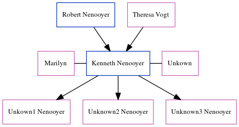

The child of Robert Nenooyer and Theresa Vogt, Kenneth Nenooyer was married twice - to MarilynUnkown. He had 3 children: Unkown1, Unknown2 and Unknown3 with unknown mother (natural) (natural).
Parents
Family Tree

Generated by ged2site. Last updated on Jun 13, 2024